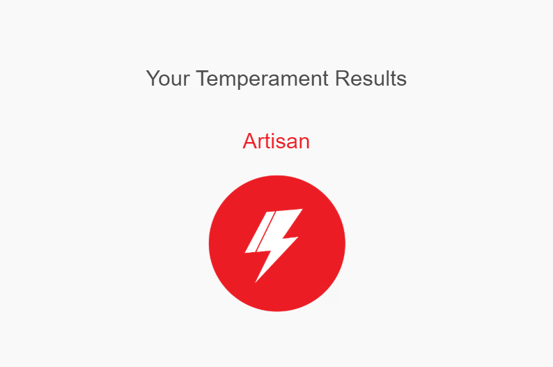

The Impact of Football On My Academic Pursuits
Football has greatly influenced my academic life, teaching me discipline, time management, and perseverance. It has helped me stay focused and maintain a strong work ethic in school, as I aim to balance my passion for sports with my educational goals.
My Favourite Quote
"The best way to predict the future is to invent it." — Alan Kay
Alan Kay is considered by some as the “father of personal computers” because he envisioned a small computing system in the 1970's, long before notebook computers were available. His quote mentioned aboveresonates with me because it emphasizes the power of initiative and creativity. It inspires me to take control of my destiny and push beyond boundaries to shape the future I want.
Personality Test
I took an online personality test (Keirsey Temperament Sorter) to assess my personality type.

The test categorized me as an "Artisan," which aligns with my personal traits of valuing personal growth and helping others. I found the test to be quite accurate, as it reflects my inclination toward seeking meaningful goals and a desire to contribute to society. However, I do believe that personality can evolve, and the test provides a snapshot that may change as I continue to grow and experience new challenges.